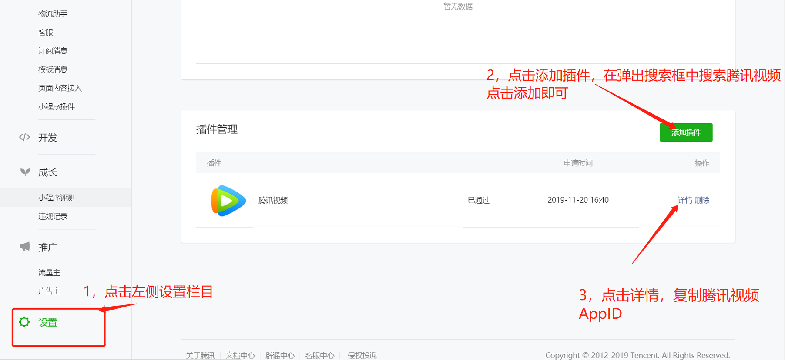
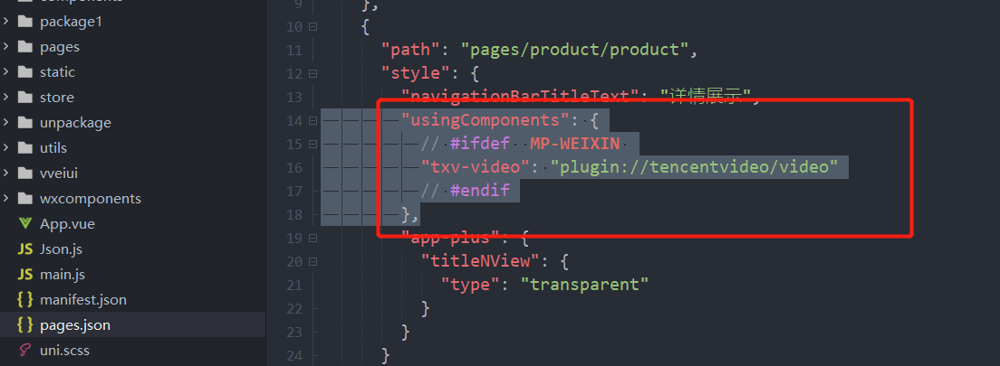
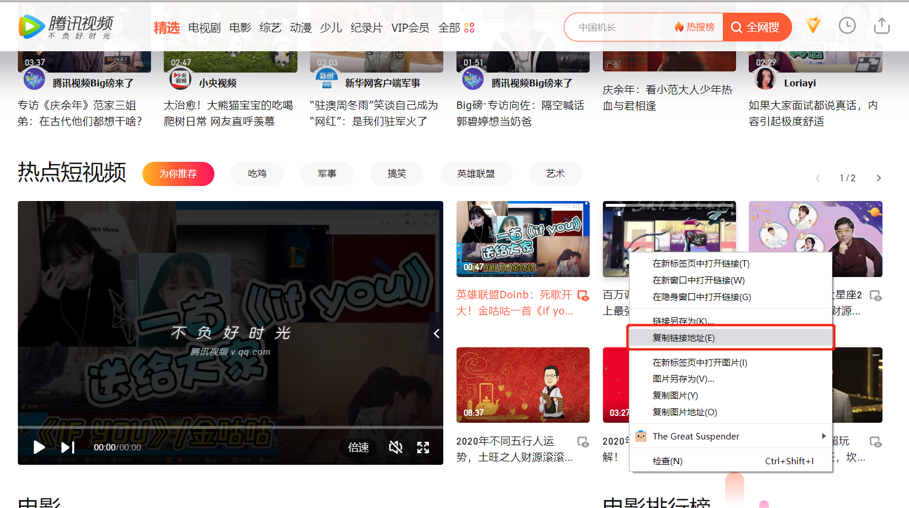
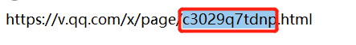

正式开始使用腾讯视频小程序插件之前需先在微信公众平台 -> 第三方设置 -> 插件管理处添加插件，如下图所示：

注意在使用uni-app开发微信小程序时与直接会用微信网页开发工具开发微信小程序是有很大的差别的，因为uni-app可开发多平台的原因，因此不同平台的开发相应的配置需要放到指定的位置才能够生效。而uni-app引入腾讯视频小程序有两种方式一种是整个小程序可使用（小程序中所有的分包可以使用），第二种是指定对应的分包可使用。
使用插件之前需要在manifest.json中的mp-weixin内声明使用的插件，具体配置参照所用插件的开发文档：
"mp-weixin": {
/* 小程序相关配置 */
"usingComponents": true,//是否启用自定义组件模式
"appid": "小程序AppID",
"plugins": {
"tencentvideo": {
"version": "1.3.6",
"provider": "腾讯视频小程序AppID"
}
}
}
如果插件只在（同一个插件不能被多个分包同时引用）一个分包用到，可以单独配置到分包中，这样插件不会随主包加载，可以在pages.json的subPackages中声明插件：
{
"subpackages": [
{
"root": "package1",//分包名称
"pages": [
"pages/cat",
"pages/dog"
],
"plugins": {
"tencentvideo": {
"version": "1.3.6",
"provider": "腾讯视频小程序AppID"
}
}
}
]
} "usingComponents": {
// #ifdef MP-WEIXIN
"txv-video": "plugin://tencentvideo/video"
// #endif
},

<view>
<!--vid中的腾讯视频id最好为动态的数据，方便管理-->
<txv-video :vid="VideoId" playerid="txv1"></txv-video>
</view>
<script>
export default {
data() {
return {
VideoId:'c3029q7tdnp'
};
}
}
</script> 打开网页腾讯视频=>随便找到一个视频点击鼠标右键=>赋值链接地址（仅供参考）如下图所示：

最后取视频连接地址.html前面的那一小串英文数字编号即可，下图所示：

https://mp.weixin.qq.com/wxopen/plugindevdoc?appid=wxa75efa648b60994b&token=&lang=zh_CN
https://uniapp.dcloud.io/component/mp-weixin-plugin